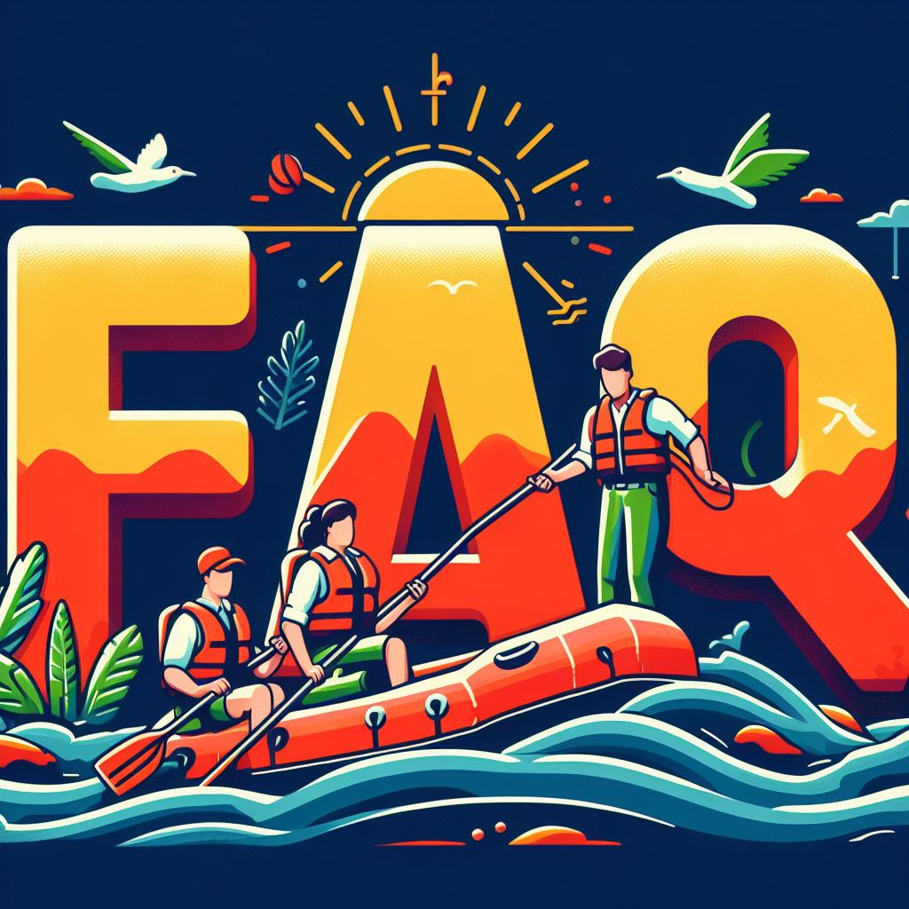

Rafting FAQ
What is the age requirement for rafting?
The age requirement for rafting varies depending on the river and the outfitter. However, most outfitters require participants to be at least 6 years old.
What should I wear rafting?
You should wear comfortable clothing that you don't mind getting wet. Shoes with good traction are also important. Some outfitters may provide you with a life jacket and helmet, but it's always a good idea to bring your own if you have them.
Is rafting safe?
Rafting is a relatively safe activity, but there are some risks involved. It's important to follow your guide's instructions and to be aware of the potential hazards. Some of the most common risks include falls into the water, collisions with rocks, and hypothermia.
What happens if I fall out of the raft?
Don't panic! If you fall out of the raft, try to stay afloat and follow your guide's instructions. Your guide will be trained to rescue you safely.
Can I bring my camera rafting?
Yes, you can bring your camera rafting, but be sure to secure it in a waterproof case. It's also a good idea to bring a spare battery.
What is the best time of year to go rafting?
The best time of year to go rafting depends on the climate of the region. In general, rafting season is from April to September..